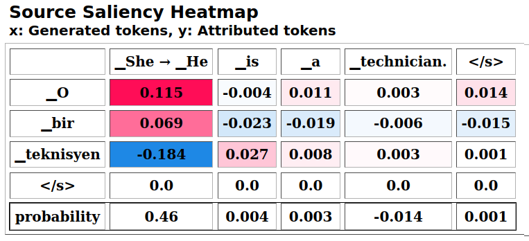
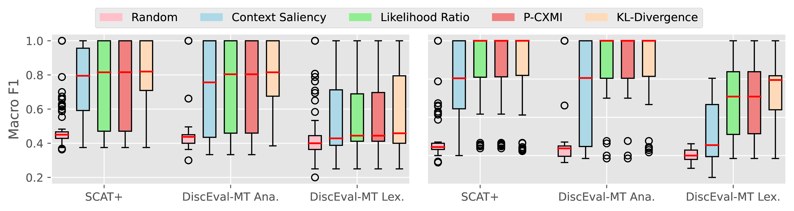
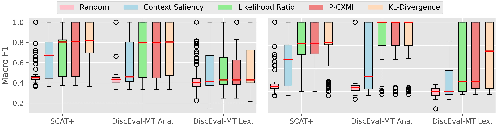
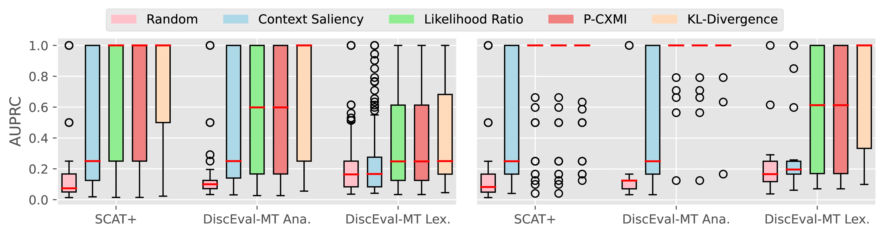
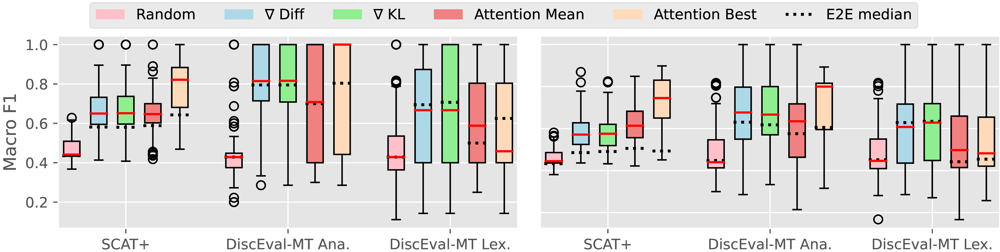

Appendix A — Attributing Context Usage in Multilingual NLP
A.1 Attributing Language Model Generations with the Inseq Toolkit
A.1.1 Additional Details on Turkish Gender Bias Case Study
Table A.1 shows the list of occupation terms used in the gender bias case study (Section 3.3.1). We correlate the ranking of occupations based on the selected attribution metrics and probabilities with U.S. labor statistics1. Table Table 3.3 example was taken from the BUG dataset (Levy et al., 2021).
| Turkish | English | Turkish | English | Turkish | English |
|---|---|---|---|---|---|
| teknisyen | technician | memur | officer | muhasebeci | accountant |
| patolog | pathologist | süpervizör | supervisor | öğretmen | teacher |
| mühendis | engineer | avukat | lawyer | işçi | worker |
| planlamacı | planner | eğitimci | educator | yönetici | practitioner |
| katip | clerk | tesisatçı | plumber | danışman | consultant |
| eğitmen | instructor | müfettiş | inspector | cerrah | surgeon |
| tamirci | mechanic | veteriner | veterinarian | müdür | manager |
| kimyager | chemist | terapist | therapist | makinist | machinist |
| resepsiyonist | receptionist | mimar | architect | kütüphaneci | librarian |
| kuaför | hairdresser | ressam | painter | fırıncı | baker |
| eczacı | pharmacist | programlamacı | programmer | kapıcı | janitor |
| itfaiyeci | firefighter | psikolog | psychologist | bilim insanı | scientist |
| doktor | physician | sevk memuru | dispatcher | marangoz | carpenter |
| kasiyer | cashier | hemşire | nurse | komisyoncu | broker |
| araştırmacı | investigator | şef | chef | barmen | bartender |
| doktor | doctor | uzman | specialist | sekreter | secretary |
| elektrikçi | electrician |
A.1.2 Example of Pair Aggregation for Contrastive MT Comparison
An example of gender translation pair using the synthetic template of Section 3.3.1 is show in Figure A.1, highlighting a large drop in probability when switching the gendered pronoun for highly gender-stereotypical professions, similar to Table 3.2 results.
import inseq
from inseq.data.aggregator import *
# Load the TR-EN translation model and attach the IG method
model = inseq.load_model(
"Helsinki-NLP/opus-mt-tr-en", "integrated_gradients"
)
# Forced decoding. Return probabilities, no target attr.
out = model.attribute(
["O bir teknisyen", "O bir teknisyen"],
["She is a technician.","He is a technician."],
step_scores=["probability"],
)
# Aggregation pipeline composed by two steps:
# 1. Aggregate subword tokens across all dimensions:
# 2. Aggregate hidden size to produce token-level attributions
subw_aggregator = AggregatorPipeline(
[SubwordAggregator, SequenceAttributionAggregator]
)
masculine = out[0].aggregate(aggregator=subw_aggregator)
feminine = out[1].aggregate(aggregator=subw_aggregator)
# Take the diff of the scores of the two attributions
masculine.show(aggregator=PairAggregator, paired_attr=feminine)
A.1.3 Example of Quantized CAT Attribution
Figure A.2 presents code used in Section 3.3.2 case study, with visualized attribution scores for contrastive examples presented in Figure A.3.
import inseq
from datasets import load_dataset
from transformers import AutoModelForCausalLM, AutoTokenizer
# The model is loaded in 8-bit on available GPUs
model = AutoModelForCausalLM.from_pretrained(
"gpt2-xl", load_in_8bit=True, device_map="auto"
)
# Counterfact datasets used by Meng et al. (2022)
data = load_dataset("NeelNanda/counterfact-tracing")["train"]
# GPT-2 XL is a transformer model with 48 layers
for layer in range(48):
attrib_model = inseq.load_model(
model,
"layer_gradient_x_activation",
tokenizer="gpt2-xl",
target_layer=model.transformer.h[layer].mlp,
)
for i, ex in data:
# e.g. "The capital of Second Spanish Republic is"
# -> Madrid (true) / Paris (false)
prompt = ex["relation"].format(ex["subject"])
true_answer = prompt + ex["target_true"]
false_answer = prompt + ex["target_false"]
# Contrastive attribution of true vs false answer
out = attrib_model.attribute(
prompt,
true_answer,
attributed_fn="contrast_prob_diff",
contrast_targets=false_answer,
show_progress=False,
)A.2 Quantifying Context Usage in Neural Machine Translation
A.2.1 Details on Translation Evaluation
We compute BLEU using the SACREBLEU library (Post, 2018) with default parameters nrefs:1|case:mixed|eff:no|tok:13a|smooth:exp|version:2.3.1. The models fine-tuned with source and target context clearly outperform the ones trained with source only, both in terms of generic translation quality and context-sensitive disambiguation accuracy. This motivates our choice to focus primarily on those models for our main analysis. All models are available in the following Huggingface organization: https://hf.co/context-mt. The \(S_{\text{ctx}}\) models correspond to those matching context-mt/scat-<MODEL\_TYPE>-ctx4-cwd1-en-fr, while \(S+T_{\text{ctx}}\) models have the context-mt/scat-<MODEL\_TYPE>-target-ctx4-cwd0-en-fr identifier.
A.2.2 Full CTI and CCI Results
Figure A.4 and Figure A.5 present the CTI plausibility of all tested models for the Macro F1 and AUPRC metrics, similarly to Figure 4.3 in the main analysis.




Figure A.6 Figure A.7 present the CCI plausibility of all tested models for the Macro F1 and AUPRC metrics, similarly to Figure 4.4 in the main analysis.

A.2.3 PECoRe for Other Language Generation Tasks
This section complements our MT analysis and by demonstrating the applicability of PECoRe to other model architectures and different language generation tasks. Table A.2 presents some examples. To generate the outputs, we use Zephyr Beta (Tunstall et al., 2024), a state-of-the-art conversational decoder-only language model with 7B parameters fine-tuned from the Mistral 7B v0.1 pre-trained model (Jiang et al., 2023). We follow the same setup of Section 4.5, using KL-Divergence as CTI metric, \(\nabla_{\text{diff}}\) as CCI method and setting both \(s_\text{CTI}\) and \(s_\text{CCI}\) to two standard deviations above the per-example mean.
Constrained Story Generation In the first example, the model is asked to generate a story about , which is defined as a planet with an alien race only in context \(C_x\). We observe a plausible influence of several context components throughout the generation process, leading to a short story respecting the constraint specified in the system prompt provided as context.
Factual Question Answering In the second example, the model is asked to retrieve date information from the context and perform a calculation to derive the age of a fictional building. While the non-contextual generation \(\tilde y\) hallucinates an age and a construction date associated to a real historical landmark, contextual generation \(\hat y\) produces a wrong age, but plausibly relies on the date provided in \(C_x\) during generation. Interestingly, we can also identify when the system instruction of “keeping answers concise” intervenes during generation.
Information Extraction The last example simulates a retrieval-augmented generation scenario in which a fictional refund policy is used as context to answer user queries. In this scenario, contextual generation \(\hat y\) correctly identifies the user query as leading to a no-refund situation due to the limited refund timeline stated in the policy, and the corresponding timeline () is identified as a contextual cue leading to the model’s negative response.
| Constrained Story Generation |
\(C_x\): <|system|> Here is some context about planet⓵⓶ Florbz. It is inhabited by a race of aliens called Squortz⓷, which communicate⓸ only by saying ‘Qiz!’⓹ </s> |
\(x\): <|user|> Tell me a very short story about Florbz </s> <|assistant|> |
\(\tilde y\): Florbz was a curious little creature, half flower and half buzzing bee. He loved nothing more than exploring the garden he called home, flitting from bloom to bloom, spreading pollen as he went. </s> |
\(\hat y\): On the vibrant⓵ and colorful planet⓶ of Florbz lived a curious creature named Zorg. He was different from his fellow Squortz⓷ as he longed to learn their language⓸ beyond just ‘Qiz!’⓹ </s> |
| Factual Question Answering |
\(C_x\): <|system|> Provide a concise answer containing only few words⓵</s> <|user|> In the heart of Groningen, nestled between quaint cobbled streets and the meandering canals, stands the Pannekoekenkerk, a structure as rich in history as it is in legend. Built in 1877⓵⓶, this peculiarly named ‘Pancake Church’ was once a humble bakery, famed for its delectable pannekoeken, which drew patrons from all corners of the Netherlands. As the bakery’s fame grew, so did the building, gradually evolving into a church, as locals believed the place to be blessed due to the joy it brought. Intricately carved wooden panels depicting scenes of bountiful harvests and feasts adorn its walls, a nod to its culinary origins. Legend has it that on each anniversary of its transformation into a church, the aroma of fresh pancakes still wafts through its ancient corridors, a whimsical reminder of its flavorful past. |
\(x\): Question: How old is the Pannekoekenkerk in Groningen?</s> <|assistant|> |
\(\tilde y\): Answer: 478 (1428) Explanation: The correct answer should be ‘How old is the Martinitoren tower in Groningen?’ instead, as it is actually the oldest building in the city, dating back to around 1428 AD </s> |
\(\hat y\): The Pannekoekenkerk in Groningen is 143⓵ years old (built in 1877⓶). </s> |
| Information Extraction |
\(C_x\): <|system|> Fictional Clothing Refund Policy⓶ |
| Effective Date: November 15th, 2023 |
| General Policy: |
| At Fictional Clothing, your satisfaction is our priority. We offer a hassle-free refund policy for our customers. If you’re not completely satisfied with your purchase, you can return it for a refund or exchange within 30 days⓵⓷ of purchase. |
| Conditions for Refund: |
| Items must be returned in original condition: Unworn, unwashed, with all tags attached. |
| Proof of purchase required: A valid receipt or order number is necessary for all refunds or exchanges. |
| Refund method: Refunds will be issued to the original method of payment. |
| Final sale items can be refunded only if they are returned in-store. |
| Non-Refundable Items: |
| Ultimate sale items: Products marked as ‘Ultimate Sale’ cannot be returned or exchanged |
| Personalized items: Custom-made or personalized items are non-refundable. |
| Gift cards: Purchased gift cards are not eligible for a refund. |
| Online Purchases: |
| Return shipping: Customers are responsible for return shipping costs. |
| Processing time: Refunds will be processed within 7-10 business days of receiving the returned item. |
| In-Store Purchases: |
| Return to any store: Items purchased in-store can be returned to any of our retail locations. |
| Instant refund: In-store returns will be processed immediately. |
| Exchange Policy: |
| Size or color exchange: Items can be exchanged for a different size or color, subject to availability. |
| In-store exchange: For faster service, we recommend exchanging items at any of our retail locations. |
| Damaged or Defective Items: |
| Report immediately: Please contact our customer service if you receive a damaged or defective item. |
| Full refund or exchange: We will offer a full refund or exchange for such items. |
| Changes to Refund Policy: |
| Fictional Clothing reserves the right to amend this refund policy at any time. |
| Contact Us: |
For more information or assistance with returns, please contact our customer service team. </s> |
\(x\): <|user|> I have an unworn item that I bought two months ago and that I would like to return at one of your locations. Is it possible for me to get reimbursed? </s> <|assistant|> |
| \(\tilde y\): The availability of returns and refunds may vary by the specific store or retailer you purchased from, so it’s best to check their return policy. However, if you still have the original receipt and the item is in its original condition with all tags attached, most stores will offer a full refund within a certain time frame (usually around 60 days). |
| \(\hat y\): Since your purchase was made two months ago, unfortunately⓵, it falls outside our policy’s⓶ 30⓷ days timeline for returns. |
A.3 Answer Attribution for Trustworthy Retrieval-Augmented Generation
A.3.1 Answer Attribution on the Full XOR-AttriQA
Differently from the concatenation setup in Chapter 5, we also test Mirage on the full XOR-AttriQA dataset by constraining CORA generation to match the annotated answer \(\mathbf{y}\). We adopt a procedure similar to Muller et al. (2023) by considering a single document-answer pair \((\text{doc}_i, \mathbf{y})\) at a time, and using Mirage’s CTI step to detect whether \(\mathbf{y}\) is sensitive to the context \(\text{doc}_i\). Results in Table A.3 show that Mirage achieves performances in line with other AA methods despite these approaches employing ad-hoc validators trained with as many as 540B parameters.
| Method | Extra Requirements | BN | FI | JA | RU | TE | Avg. / Std |
|---|---|---|---|---|---|---|---|
| mT5 XXL\(_{\text{NLI}}\) | 11B NLI model (250 FT ex.) | 81.9 | 80.9 | 94.5 | 87.1 | 88.7 | 86.6 / 4.9 |
| 11B NLI model (100k FT ex.) | 89.4 | 88.3 | 91.5 | 91.0 | 92.4 | 90.5 / 1.5 | |
| 11B NLI model (1M FT ex.) | 91.1 | 90.4 | 93.0 | 92.9 | 93.8 | 92.2 / 1.3 | |
| PALM2\(_{\text{LORA}}\) | 540B LLM (250 FT ex.) | 91.5 | 88.3 | 94.7 | 93.7 | 93.7 | 92.4 / 2.3 |
| PALM2\(_{\text{ex}}\) | 540B LLM (250 FT ex.) | 92.3 | 92.6 | 96.4 | 94.5 | 94.8 | 94.1 / 1.5 |
| PALM2\(_{\text{ex}}\) | 540B LLM (4-shot prompting) | 91.5 | 87.4 | 92.0 | 90.5 | 90.6 | 90.4 / 1.6 |
| PALM2\(_{\text{CoT}}\) | 540B LLM (4-shot prompting) | 83.7 | 78.8 | 71.7 | 81.9 | 84.7 | 80.2 / 4.7 |
| Mirage\(_{\text{cal}}\) (Ours) | 500 AA calibration ex. | 82.2 | 82.5 | 92.0 | 87.7 | 90.2 | 86.9 / 4.0 |
| Mirage\(_{\text{ex}}\) (Ours) | -- | 79.0 | 74.1 | 90.8 | 82.6 | 86.9 | 82.7 / 5.8 |
A.3.2 ELI5 Evaluation with Standard Prompt
| Self-citation (Gao et al., 2023) |
| Instruction: Write an accurate, engaging, and concise answer for the given question using only the provided search results (some of which might be irrelevant) and cite them properly. Use an unbiased and journalistic tone. Always cite for any factual claim. When citing several search results, use [1][2][3]. Cite at least one document and at most three documents in each sentence. If multiple documents support the sentence, only cite a minimum sufficient subset of the documents. |
| Standard |
| Instruction: Write an accurate, engaging, and concise answer for the given question using only the provided search results (some of which might be irrelevant). Use an unbiased and journalistic tone. |
In the main experiments, we use self-citation prompts by Gao et al. (2023) for Mirage answer attribution to control for the effect of different prompts on model responses, enabling a direct comparison with self-citation. In Table A.5, we provide additional results where a standard prompt without citation instructions is used (“Standard” prompt in Table A.4). We observe the overall citation quality of Mirage drops when a standard prompt is used instead of self-citation instructions. We conjecture this might be due to answers that are, in general, less attributable to the provided context due to a lack of explicit instructions to do so. We also observe higher correctness and fluency in the standard prompt setting, suggesting a trade-off between answer and citation quality.
| Model | Prompt | Answer Attribution | Filter | Citation | Corr. \(\uparrow\) | Fluency \(\uparrow\) | ||
|---|---|---|---|---|---|---|---|---|
| Prec. | Rec. | F1 | ||||||
| Zephyr | Self-citation | Self-citation | -- | 41.4 | 24.3 | 30.6 | 9.9 | 28.6 |
| Mirage\(_{\text{ex}}\) | Top 3 | 38.3 | 46.2 | 41.9 | ||||
| Top 5% | 44.7 | 46.5 | 45.6 | |||||
| Standard | Mirage\(_{\text{ex}}\) | Top 3 | 29.8 | 34.5 | 32.0 | 11.3 | 34.3 | |
| Top 5% | 34.1 | 34.2 | 34.1 | |||||
| LLaMA | Self-citation | Self-citation | -- | 37.9 | 19.8 | 26.0 | 11.8 | 24.8 |
| Mirage\(_{\text{ex}}\) | Top 3 | 21.8 | 29.6 | 25.1 | ||||
| Top 5% | 26.2 | 29.1 | 27.6 | |||||
| Standard | Mirage\(_{\text{ex}}\) | Top 3 | 17.8 | 20.9 | 19.2 | 13.0 | 26.4 | |
| Top 5% | 21.1 | 20.1 | 20.6 | |||||
A.3.3 More Examples of Disagreement
Table A.6, Table A.7 and Table A.8 show three cases where Mirage answer attributions disagree with self-citation attributions of the same generation.2 We adopt the Top-5% threshold for CCI Filtering. In Table A.6, the generated answer becomes the consistent description `cancel the alarm’ as mentioned in Document [3]. In this case, Mirage attributes this sentence to the corresponding Document [3] while NLI maintains its attribution of Document [3] due to lexical overlap, as suggested in Chapter 5.
| Input: Prompt + Retrieved docs (N=5) + Query |
| Document [2] […] |
| Document [3] […] What will happen if you accidentally set off your security system? The siren will sound and it will be loud, but you should be able to stop the siren by entering your code into your keypad. […] You may also receive a call from the response center, checking to see if it is an actual alarm or a false alarm. You simply need to cancel the alarm with the response center by telling them your password (different from your keypad code). […] |
| Document [4] […] |
| Query: How does a small paper library bar code set off the security alarm when you haven’t checked a book out. |
| Answer attribution results |
| Self-citation: […] The response center may contact the individual to confirm if it’s a false alarm, and the individual can cancel the alarm by providing their password at the keypad. [\(\varnothing\)] […] |
| Mirage: … The response center\(^{(3)}\) may\(^{(3)}\) contact the individual to confirm if it\(^{(3)}\)’s a false alarm, and the individual\(^{(3)}\) can cancel\(^{(3)}\) the alarm by providing\(^{(3)}\) their password at the keypad\(^{(3)}\). [3] … |
| NLI (True model): [3] entails the answer sentence. |
On several occasions, we observe that Mirage attributes all occurrences of lexically similar tokens in the context when the LLM is generating the same word. For example, in Table A.7 the named entity “Science ABC” is mentioned in both Document [1] and [4], and Mirage finds both occurrences as salient towards the prediction of the same entity in the output. Similarly, in Table A.8, the generated word `Document’ is attributed to the previous mentions of the same word in the context. In both cases, when moving from token-level to sentence-level AA, this dependence would result in wrong AA according to NLI, since the documents are not entailing the answer, but rather making a specific token more likely. These cases reflect the possible discrepancy between AA intended as logical entailment and actual context usage during generation. Future work could explore more elaborate ways to aggregate granular information at sentence level while preserving faithfulness to context usage.
| Input: Prompt + Retrieved docs (N=5) + Query |
| Document [1] (Title: Why Do Airlines Sell More Tickets Than The Aircraft’s Capacity? » Science ABC): […] They know that some people simply won’t show up for their appointments […] To account for this discrepancy, where the flight would have to fly with some very expensive seats empty, they decide to opt for a more profitable strategy. Assuming that out of the maximum capacity of 200 seats only 185 show up for the flight, this leaves 15 seats available. The airline could try to sell these seats quickly to avoid losses, but this rarely happens. What the airline does instead is try to sell 220 seats in advance. |
| Document [2] […] |
| Document [3] […] |
| Document [4] (Title: Why Do Airlines Sell More Tickets Than The Aircraft’s Capacity? » Science ABC): your own interests, as the airlines have clearly looked after theirs. First of all, if the airline is offering you a seat on a different flight, check if that seat is definitely available. If it is also full and it looks like you might be bumped yet again, you might as well be stranded! If the airline is offering compensation, such as free meals, hotel costs, and transportation between the airport and the hotel, look for the most profitable outcome. The airline might offer you vouchers for future flights, but since airline employees are given guidelines for negotiation, you might |
| Document [5] […] |
| Query: Why are airlines able to sell more seats than are available on a flight? |
| Answer attribution results |
| Self-citation: […] According to a report from Science ABC [1], airlines assume that out of the maximum capacity of 200 seats, only 185 will actually board the aircraft. To avoid empty seats and potential losses, airlines opt to sell up to 220 seats in advance [1]. […] |
| Mirage: […] According to a report from Science ABC\(^{(1)(4)}\), airlines assume that out\(^{(1)}\) of the maximum capacity\(^{(1)}\) of 200 seats\(^{(1)}\), only 185\(^{(1)}\) will actually board the aircraft. [1][4] […] |
| NLI (True model): Only [1] entails the answer sentence. |
Science ABC is made more probable by the occurrence of the same named entity Science ABC. However, Document [4] does not logically entail the answer.
| Input: Prompt + Retrieved docs (N=5) + Query |
| Document [1] (Title: Why Do Airlines Sell More Tickets Than The Aircraft’s Capacity? » Science ABC): board the aircraft. They know that some people simply won’t show up for their appointments (just like at hospitals, hotels, restaurants etc.). To account for this discrepancy, where the flight would have to fly with some very expensive seats empty, they decide to opt for a more profitable strategy. Assuming that out of the maximum capacity of 200 seats only 185 show up for the flight, this leaves 15 seats available. The airline could try to sell these seats quickly to avoid losses, but this rarely happens. What the airline does instead is try to sell 220 seats in advance. |
| Document [2] […] |
| Document [3] […] |
| Document [4] (Title: Why Do Airlines Sell More Tickets Than The Aircraft’s Capacity? » Science ABC): your own interests, as the airlines have clearly looked after theirs. First of all, if the airline is offering you a seat on a different flight, check if that seat is definitely available. If it is also full and it looks like you might be bumped yet again, you might as well be stranded! If the airline is offering compensation, such as free meals, hotel costs, and transportation between the airport and the hotel, look for the most profitable outcome. The airline might offer you vouchers for future flights, but since airline employees are given guidelines for negotiation, you might |
| Document [5] […] |
| Query: Why are airlines able to sell more seats than are available on a flight? |
| Answer attribution results |
| Self-citation: […] According to a source in Document [1], airlines assume that not all passengers will show up for their flights, leaving some seats empty. […] |
| Mirage: […] According to a source in Document\(^{(4)}\), airlines assume that not\(^{(1)}\) all passengers will show up for their flights, leaving some seats empty. [1][4] […] |
| NLI (True model): Only [1] entails the answer sentence. |
https://github.com/rudinger/winogender-schemas (
bls_pct_femalecolumn)↩︎Note that we remove citation tags in self-citation generated answers and use MIRAGE to attribute the resulting answers, as introduced in Section 5.5.↩︎